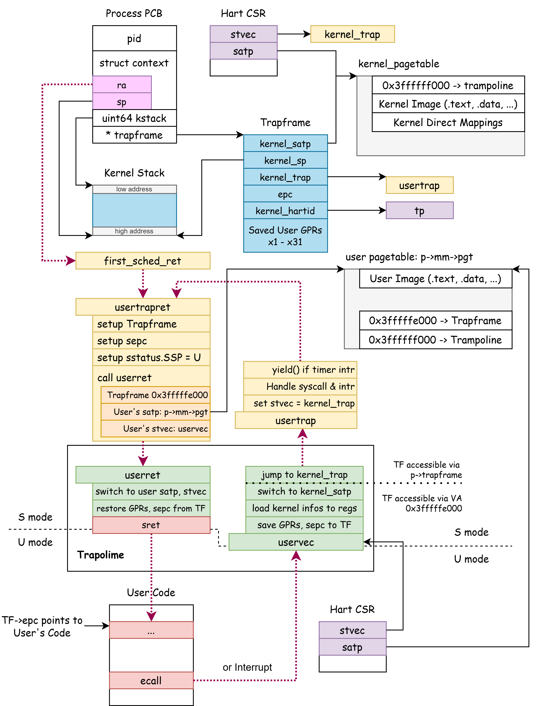

Userspace¶
Userspace is a restricted runtime environment provided by the operating system for user programs. The OS leverages CPU hardware features to enforce isolation between userspace and the kernel, typically including:
- Privilege-level isolation: Userspace runs at a low privilege level, and attempts to execute high-privilege instructions trigger exceptions.
- Memory space isolation: The kernel configures page tables to define userspace address space, preventing direct access to kernel addresses.
Lab Objectives¶
- Understand how to establish userspace.
- Grasp the trampoline mechanism.
- Comprehend the execution process of the first user process.
- Understand the role of
uaccess.
Overview¶
In this Lab, we will run the CPU in U-mode for the first time and execute the first user program.
From the assignment1, we observed that if sstatus.SPP == 0 during an sret instruction, the CPU downgrades to U-mode.
Once in U-mode, the CPU can only return to S-mode via a trap, which can be either an exception or an interrupt.
- User programs can invoke an exception using
ecall, triggering Exception: Code 8 (Environment call from U-mode), the RISC-V mechanism for system calls (syscalls). - In U-mode, interrupts are always enabled. Recall from the "Trap, Exception, and Interrupt" chapter: a trap occurs if (running in S-mode with
sstatus.SIE == 1) or (running in U-mode).
Upon completing the details outlined in this lab, you can refer to the diagram below to understand the userspace structure in xv6.
In the diagram, blue blocks represent pages allocated by kallocpage, yellow blocks denote kernel code, and green blocks indicate trampoline code. It illustrates pointer relationships (black arrows) among kernel data structures and the code invocation process (red dashed arrows) during kernel-user mode transitions.

xv6-lab5 Code Branch
https://github.com/yuk1i/SUSTech-OS-2025/tree/xv6-lab5
Use the command git clone https://github.com/yuk1i/SUSTech-OS-2025 -b xv6-lab5 xv6lab5 to download the xv6-lab5 code.
Run make run to launch the kernel for this lab, which starts the first user process init, with source code at user/src/init.c.
User and Kernel Mode Transitions¶
The RISC-V CPU operates at a specific privilege level. The OS runs in S-mode, while user programs execute in U-mode.
We will explain how to downgrade from S-mode to U-mode and return from U-mode to S-mode.
Kernel -> User¶
In the "Interrupts" chapter, we learned that the sret instruction performs three actions:
sstatus.SIE <= sstatus.SPIECurrent_Privilege_Level <= sstatus.SPPpc <= sepc
In plain terms: restore sstatus.SIE from sstatus.SPIE, set the privilege level (U/S) to sstatus.SPP, and set the program counter (PC) to sepc.
The SPP bit in the CSR sstatus is described as follows:
The SPP bit indicates the privilege level at which a hart was executing before entering supervisor mode. When a trap is taken, SPP is set to 0 if the trap originated from user mode, or 1 otherwise. When an SRET instruction (see Section 3.3.2) is executed to return from the trap handler, the privilege level is set to user mode if the SPP bit is 0, or supervisor mode if the SPP bit is 1; SPP is then set to 0.
Thus, if sstatus.SPP == 0 during sret, the CPU downgrades to U-mode. (This does not strictly require being in a trap handler.)
User -> Kernel¶
In U-mode, the CPU returns to S-mode by triggering a trap, which includes:
- Interrupts: Such as timer interrupts or external interrupts.
-
Exceptions: Including:
- Illegal Instruction
- (Load, Store, Fetch) Page Fault
- Environment call (RISC-V’s syscall mechanism，i.e.,
ecall)
For system calls, user programs use the ecall instruction to trigger a trap, allowing the CPU to return to S-mode via the trap mechanism.
ecall
Recall that we previously used ecall in S-mode to invoke interfaces provided by M-mode.
An environment call requests services from the execution environment by raising an exception.
User Page Table / Kernel Page Table¶
In the previous lab, we explored the RISC-V page table model and set up a page table for the kernel. The 4th bit in a PTE, PTE_U, indicates whether the mapping is accessible in user mode.
In this lab, we introduce userspace, where user processes must execute.
We divide the 512 GiB address space into user addresses (low) and kernel addresses (high), with user addresses starting at 0x0000_00 and kernel addresses at 0xffff_ff.
Each user process requires its own independent address space, so we create a distinct user page table for each user program.
In xv6, user page tables exclude kernel page table entries, meaning they lack mappings for kernel code, data, or direct mappings. This poses a challenge during S-mode to U-mode transitions:
Imagine a user process using its user page table when a trap occurs, requiring a switch to S-mode. Before entering the trap handler, the CPU must jump to stvec, but it still uses the user’s satp (user page table), which lacks kernel space mappings. Thus, the kernel’s trap handler address (stvec, e.g., 0xffff_ffff_8020_xxxx) is inaccessible, creating a problem.
We cannot directly use the kernel’s stvec in U-mode. This issue resembles the relocation challenges we faced earlier.
To resolve this, we designate a special trap handler for U-mode with a virtual address identical in both kernel and user page tables. This allows execution in kernel mode with a user page table during U-mode to S-mode transitions via traps.
This special page, called the trampoline, is mapped to 0x0000_003f_ffff_f000.
Trampoline (trampoline.S)¶
Trampoline: n. A springboard or rebound mechanism.
In xv6, the trampoline consists of two code segments, uservec and userret, handling transitions from user mode to kernel mode (U-mode’s stvec) and from kernel mode to user mode, respectively.
The trampoline’s virtual address, 0x0000_003f_ffff_f000, exists in both the kernel page table and every user page table, ensuring safe satp switches without invalidating the current PC (recall relocation issues from the previous chapter).
Trampoline - User to Kernel¶
When transitioning from U-mode to S-mode via a trap, uservec switches to the kernel page table and invokes the user’s trap handler, usertrap.
uservec (trampoline.S)¶
.section trampsec
.globl trampoline
trampoline:
.globl uservec
uservec:
# trap.c sets stvec to point here, so
# traps from user space start here,
# in supervisor mode, but with a user page table.
#
# sscratch points to where the process's p->trapframe is
# mapped into user space, at TRAPFRAME.
# swap a0 and sscratch, so that a0 is TRAPFRAME
csrrw a0, sscratch, a0
# save the user registers (x1 - x31) in TRAPFRAME
sd ra, 40(a0)
sd sp, 48(a0)
# ...
sd t5, 272(a0)
sd t6, 280(a0)
# we have saved t0, so we can smash it
# restore a0 from sscratch, and save it
csrr t0, sscratch
sd t0, 112(a0)
# save epc
csrr t1, sepc
sd t1, 24(a0)
# load kernel's satp, sp, usertrap handler, tp(cpuid)
ld t1, 0(a0)
ld sp, 8(a0)
ld t0, 16(a0)
ld tp, 32(a0)
csrw satp, t1
sfence.vma zero, zero
jr t0
In uservec, all GPRs (x1-x31) are in use by the user program. We must preserve them when returning via sret in userret, consistent with kernel trap handling.
For kernel traps, we built a struct ktrapframe on the kernel stack to save GPRs. Similarly, for user traps, we define a trapframe, smaller than a page, mapped to a fixed user page table address, 0x0000_003f_ffff_e000 (the page below the trampoline).
The struct trapframe is defined in proc.h:
struct trapframe {
/* 0 */ uint64 kernel_satp; // kernel page table
/* 8 */ uint64 kernel_sp; // top of process's kernel stack
/* 16 */ uint64 kernel_trap; // usertrap()
/* 24 */ uint64 epc; // saved user program counter
/* 32 */ uint64 kernel_hartid; // saved kernel tp
/* 40 */ uint64 ra;
/* 48 */ uint64 sp;
/* ... */
/* 272 */ uint64 t5;
/* 280 */ uint64 t6;
};
Since RISC-V instruction destinations must be registers (not immediates), and we cannot modify registers before saving them, we need at least one scratch register to hold the trapframe address (0x0000_003f_ffff_e000). RISC-V provides the sscratch register for this purpose. Using csrrw a0, sscratch, a0, we swap sscratch and a0, storing the user’s a0 in sscratch and loading sscratch’s value (the trapframe address) into a0.
We stipulate that, after OS initialization, sscratch holds the trapframe’s virtual address in the user page table (0x0000_003f_ffff_e000).
After entering uservec, swapping a0 and sscratch sets a0 to 0x0000_003f_ffff_e000.
We then use instructions like sd ra, 40(a0) to save all user registers except a0. Once saved, we can modify registers, retrieving the user’s a0 from sscratch into t0 and storing it in the trapframe, completing the save process. Next, we save sepc into the trapframe.
Finally, we load kernel-related data from the trapframe: kernel page table (t1, kernel_satp), kernel stack (sp, kernel_sp), kernel trap handler (t0, kernel_trap), and CPU ID (tp, kernel_hartid).
After switching to the kernel page table, we jump to tf->kernel_trap to handle usertrap in a C environment.
Kernel Stack
The kernel uses several stacks:
boot_stack: Used during kernel boot.sched_kstack: Per-CPU stack for the scheduler.p->kstack: Per-process kernel stack for kernel threads. When transitioning from U-mode to S-mode, the user-modespis unavailable, so we switch to this stack.
Trampoline - Kernel to User¶
To transition from S-mode to U-mode (e.g., for the first user process run or returning from a trap), we call usertrapret to save kernel state, load user state, switch to the user page table via userret, and resume execution at the sepc-recorded location.
usertrapret (trap.c)¶
usertrapret saves kernel information into the trapframe, sets sepc to the trapframe’s epc, configures sstatus.SPP, computes the user page table’s satp and stvec, and jumps to userret in the trampoline.
When calling userret, we pass three arguments: the user’s trapframe address, user page table satp, and stvec. In assembly, these are accessible via a0, a1, and a2.
//
// return to user space
//
void usertrapret() {
if (intr_get())
panic("usertrapret entered with intr on");
struct trapframe *trapframe = curr_proc()->trapframe;
trapframe->kernel_satp = r_satp(); // kernel page table
trapframe->kernel_sp = curr_proc()->kstack + KERNEL_STACK_SIZE; // process's kernel stack
trapframe->kernel_trap = (uint64)usertrap;
trapframe->kernel_hartid = r_tp();
w_sepc(trapframe->epc);
// set up registers for trampoline.S's sret to user space
// set S Previous Privilege mode to User
uint64 x = r_sstatus();
x &= ~SSTATUS_SPP; // clear SPP to 0 for user mode
x |= SSTATUS_SPIE; // enable interrupts in user mode
w_sstatus(x);
// tell trampoline.S the user page table to switch to
uint64 satp = MAKE_SATP(KVA_TO_PA(curr_proc()->mm->pgt));
uint64 stvec = (TRAMPOLINE + (uservec - trampoline)) & ~0x3;
uint64 fn = TRAMPOLINE + (userret - trampoline);
tracef("return to user @%p, fn %p", trapframe->epc);
((void (*)(uint64, uint64, uint64))fn)(TRAPFRAME, satp, stvec);
}
userret (trampoline.S)¶
In userret, we use the a1 register (from usertrapret) to switch to the user page table. We can then access the trapframe at 0x0000_003f_ffff_e000 and set stvec to the user trap handler (uservec) from the kernel trap entry.
Next, we store the user’s a0 in sscratch and restore other user registers from the trapframe. Finally, we swap a0 and sscratch with csrrw a0, sscratch, a0, restoring the user’s a0 while setting sscratch back to the trapframe address (0x0000_003f_ffff_e000).
At the end of userret, we execute sret, switching to U-mode and resuming execution at the sepc location.
.globl userret
userret:
# userret(TRAPFRAME, pagetable, stvec)
# switch from kernel to user.
# usertrapret() calls here.
# a0: TRAPFRAME, in user page table.
# a1: user page table, for satp.
# switch to the user page table.
csrw satp, a1
sfence.vma zero, zero
# switch to the user stvec.
csrw stvec, a2
# put the saved user a0 in sscratch, so we
# can swap it with our a0 (TRAPFRAME) in the last step.
ld t0, 112(a0)
csrw sscratch, t0
# restore all but a0 from TRAPFRAME
ld ra, 40(a0)
ld sp, 48(a0)
# ...
ld t5, 272(a0)
ld t6, 280(a0)
# restore user a0, and save TRAPFRAME in sscratch
csrrw a0, sscratch, a0
# return to user mode and user pc.
# usertrapret() set up sstatus and sepc.
sret
The First User Process¶
Here, we explore how the OS, after booting, transitions from S-mode to U-mode to run the first user process and handles traps within it.
Creating the User Process¶
After booting, the OS loads the first user process, init, via load_init_app called from bootcpu_init. allocproc creates and initializes the Process Control Block (PCB) for init, load_user_elf loads the init ELF into the PCB p, and add_task enqueues it in the scheduler for its first execution.
int load_init_app() {
struct user_app *app = get_elf(INIT_PROC);
struct proc *p = allocproc();
load_user_elf(app, p, argv);
add_task(p);
init_proc = p;
release(&p->lock);
return 0;
}
In the "Context Switch" chapter, allocproc initialized fields like pid and state in struct proc, setting the context to sched_first_ret. In this chapter, with user mode introduced, allocproc additionally maps the trampoline to a kernel code page in the user address space, allocates and maps a trapframe page, and stores its kernel virtual address (KVA) in p->trapframe.
struct proc *allocproc() {
// ...
found:
// ==== Resources Allocation ====
p->pid = allocpid();
p->state = USED;
// create struct mm for user memory management
p->mm = mm_create();
// map trampoline to user address `TRAMPOLINE`
mm_mappageat(p->mm, TRAMPOLINE, KIVA_TO_PA(trampoline), PTE_A | PTE_R | PTE_X);
// allocate a physical page for trapframe
uint64 __pa tf = (uint64)kallocpage();
mm_mappageat(p->mm, TRAPFRAME, tf, PTE_A | PTE_D | PTE_R | PTE_W);
// ==== Resources Allocation Ends ====
// prepare trapframe and the first return context
p->trapframe = (struct trapframe *)PA_TO_KVA(tf);
memset(&p->context, 0, sizeof(p->context));
memset((void *)p->kstack, 0, KERNEL_STACK_SIZE);
memset((void *)p->trapframe, 0, PGSIZE);
p->context.ra = (uint64)first_sched_ret;
p->context.sp = p->kstack + KERNEL_STACK_SIZE;
return p;
}
load_user_elf, the user program’s epc and other details are written into the process’s trapframe:
// setup trapframe
p->trapframe->sp = sp;
p->trapframe->epc = ehdr->e_entry;
p->trapframe->a0 = argc;
p->trapframe->a1 = uargv_ptr;
p->state = RUNNABLE;
At this point, the first user process is fully loaded and created.
First Transition to Userspace¶
Similar to the "Context Switch" chapter, after the scheduler switches to the user process via swtch, first_sched_ret executes when the process is first scheduled. It releases p->lock per scheduler conventions and jumps to usertrapret (see Trampoline section). Since the trapframe already contains the user program’s entry point and related data, userret ‘restores’ the user state, and sret initiates execution in userspace.
First Userspace Code¶
The initial userspace code is not the entry of init.c. The linker script in user/lib/user.ld defines the ELF entry as __start_main, implemented in user/lib/start_main.c.
This function calls main and uses its return value as the exit status for exit, allowing return in main to terminate the program without mandating an explicit exit syscall.
#include "syscall.h"
extern int main(int, char **);
__attribute__((section(".text.entry"))) int __start_main(int argc, char *argv[])
{
exit(main(argc, argv));
return 0;
}
Exiting Userspace¶
Upon completion, the user process calls the exit syscall in userspace to terminate normally and wake its parent for resource cleanup.
exit executes code generated by user\lib\usys.pl, placing the exit syscall number in a7 and invoking ecall to trigger an environment call trap, transitioning to S-mode for syscall execution. (The same process applies to traps during user execution.)
After ecall, since the user’s stvec points to uservec, execution jumps to the trampoline’s uservec (see Trampoline section) to enter S-mode. uservec ultimately jumps to usertrap for trap handling.
usertrap (trap.c)¶
In usertrap, we set stvec to kerneltrap to capture subsequent kernel-mode interrupts/exceptions, read scause to process the exception, and return to userspace via usertrapret.
void usertrap() {
set_kerneltrap();
assert(!intr_get());
if ((r_sstatus() & SSTATUS_SPP) != 0)
panic("usertrap: not from user mode");
struct trapframe *trapframe = curr_proc()->trapframe;
uint64 cause = r_scause();
// handle usertrap according to scause
assert(!intr_get());
usertrapret();
}
As a syscall, exit triggers the ecall branch in trap handling, invoking syscall() to execute the corresponding syscall. Since exit does not return, the OS remains in S-mode for cleanup and prepares for the next scheduling cycle, marking the end of the user process.
System Call (Syscall)¶
A system call is an OS interface allowing user programs to request kernel services. Syscalls follow a calling convention (e.g., see man 2 syscall for Linux conventions across platforms).
On RISC-V, syscalls are initiated by ecall, with the syscall number in a7, up to six arguments in a0-a5, and return values in a0 and a1.
The ecall instruction raises an exception, causing a trap with scause set to 8 (ecall from U-mode). In usertrap, we handle this exception and delegate to syscall in syscall.c.
void usertrap() {
// ...
struct proc *p = curr_proc();
struct trapframe *trapframe = p->trapframe;
uint64 cause = r_scause();
if (cause & SCAUSE_INTERRUPT) {
// handle interrupt
} else if (cause == UserEnvCall) {
// sepc points to the ecall instruction,
// but we want to return to the next instruction.
trapframe->epc += 4;
// an interrupt will change sepc, scause, and sstatus,
// so enable only now that we're done with those registers.
intr_on();
syscall();
intr_off();
}
// ...
assert(!intr_get());
usertrapret();
}
The syscall function retrieves register values from the trapframe at the time of ecall and invokes the appropriate syscall handler.
void syscall() {
struct trapframe *trapframe = curr_proc()->trapframe;
int id = trapframe->a7;
uint64 ret;
uint64 args[6] = {trapframe->a0, trapframe->a1, trapframe->a2, trapframe->a3, trapframe->a4, trapframe->a5};
switch (id) {
case SYS_read:
ret = sys_read(args[0], args[1], args[2]);
break;
case SYS_write:
ret = sys_write(args[0], args[1], args[2]);
break;
default:
ret = -1;
errorf("unknown syscall %d", id);
}
trapframe->a0 = ret;
tracef("syscall ret %d", ret);
}
uaccess¶
read & write¶
read and write are critical Linux syscalls with the following prototypes:
ssize_t read(int fd, void buf[.count], size_t count);
ssize_t write(int fd, const void buf[.count], size_t count);
read allows a user program to read up to count bytes from a file descriptor (fd) into buf, returning the number of bytes read.
write writes up to count bytes from buf to fd.
In the xv6 version we're using for this lab, we haven't introduced the concept of files yet. Therefore, we assume that the read and write system calls correspond to reading from and writing to standard input/output. These two system calls will ultimately be handled by user_console_write and user_console_read.
Thus, in the current xv6, the semantics of read and write are quite simple: write means printing data from the userspace buf to the serial port. read means waiting for data from the serial port and copying it into the buf.
Both syscalls face a common issue: How does the OS read/write user memory? User memory uses a user page table, not the kernel’s.
uaccess¶
Accessing user process memory from the kernel is a common requirement, leading us to create a set of functions known as user access primitives.
Before exploring "how uaccess enables kernel read/write of user memory," we’ve already performed this task: in loader.c, load_user_elf modifies user memory while loading an ELF user program.
Let’s recall how load_user_elf allocates and writes to user memory:
- For each
PT_LOADsegment, we determine its target virtual address and range, represented by astruct vma.
Elf64_Phdr *phdr = &phdr_base[i];
struct vma *vma = mm_create_vma(p->mm);
vma->vm_start = PGROUNDDOWN(phdr->p_vaddr);
vma->vm_end = PGROUNDUP(vma->vm_start + phdr->p_memsz);
vma->pte_flags = pte_perm;
- We map the
vmaregion usingmm_mappages, which allocates physical pages viakallocpage().
- Using
walkaddr, we translate the virtual address (VA) to a physical address (PA). Sincekallocpagereturns pages in the kernel’s direct mapping region, we convert the PA to a KVA withPA_TO_KVAfor direct access.
void *__kva pa = (void *)PA_TO_KVA(walkaddr(p->mm, va));
void *src = (void *)(app->elf_address + phdr->p_offset + file_off);
uint64 copy_size = MIN(file_remains, PGSIZE);
memmove(pa, src, copy_size);
Similarly, uaccess uses the walk family (e.g., walkaddr) with p->mm->pgt to convert user VAs to PAs, enabling memory access via the PA.
We define three primitives:
int copy_to_user(struct mm *mm, uint64 __user dstva, char *src, uint64 len);
int copy_from_user(struct mm *mm, char *dst, uint64 __user srcva, uint64 len);
int copystr_from_user(struct mm *mm, char *dst, uint64 __user srcva, uint64 max);
Assignment 2 will deepen your understanding of uaccess.
Lab Exercises¶
-
List the register states (including PC, only non-zero values) when the
initprocess first returns to user mode.Hint: In
first_sched_ret, beforeusertrapret, useprint_trapframeto displaycurr_proc()’s trapframe. -
In
user/src/init.c, uncomment:asm volatile("csrw stvec, %0" : : "r"(0x80000000));.Run the kernel with
make run;initshould trigger an exception and exit.Identify the exception triggered by
initand explain why it occurs. -
Should the trapframe and trampoline pages be accessible in U-mode? Should their PTE flags in the user page table include
PTE_U? Explain in ≤50 words.Hint: In
proc.c’sallocproc, we map these pages usingmm_mappageat.
Related Reading¶
struct mm¶
The struct mm manages user memory space, defined in vm.c. (Kernel memory management is in kvm.c.)
struct vma represents a contiguous virtual address range. Each struct mm links multiple struct vma instances via vma->next.
struct vma {
struct mm* owner;
struct vma* next;
uint64 vm_start;
uint64 vm_end;
uint64 pte_flags;
};
struct mm {
spinlock_t lock;
pagetable_t __kva pgt;
struct vma* vma;
int refcnt;
};
// vm.c
void uvm_init();
pte_t* walk(struct mm* mm, uint64 va, int alloc);
uint64 __pa walkaddr(struct mm* mm, uint64 va);
uint64 useraddr(struct mm* mm, uint64 va);
struct mm* mm_create();
struct vma* mm_create_vma(struct mm* mm);
void mm_free_pages(struct mm* mm);
void mm_free(struct mm* mm);
int mm_mappages(struct vma* vma);
int mm_remap(struct vma *vma, uint64 start, uint64 end, uint64 pte_flags);
int mm_mappageat(struct mm *mm, uint64 va, uint64 __pa pa, uint64 flags);
int mm_copy(struct mm* old, struct mm* new);
struct vma* mm_find_vma(struct mm* mm, uint64 va);
To map user memory:
- Create a
struct vmawithmm_create_vma, settingvma_start,vma_end, andpte_flags. - Map it with
mm_mappages. - Access it by converting the VA to a PA with
walkaddr, then to a KVA withPA_TO_KVA.
// loader.c, load_user_elf
// setup stack
struct vma *vma_ustack = mm_create_vma(p->mm);
vma_ustack->vm_start = USTACK_START - USTACK_SIZE;
vma_ustack->vm_end = USTACK_START;
vma_ustack->pte_flags = PTE_R | PTE_W | PTE_U;
mm_mappages(vma_ustack);
for (uint64 va = vma_ustack->vm_start; va < vma_ustack->vm_end; va += PGSIZE) {
void *__kva pa = (void *)PA_TO_KVA(walkaddr(p->mm, va));
memset(pa, 0, PGSIZE);
}
mm_mappages¶
Prototype: int mm_mappages(struct vma *vma).
This function maps the virtual address range in vma within the page table vma->owner->pgt. Note that this page table is the user process’s page table, p->mm->pgt.
For each page, it allocates a physical page with kallocpage() and maps it.
int mm_mappages(struct vma *vma) { // simplified
// sanity checking
struct mm *mm = vma->owner;
for (uint64 va = vma->vm_start; va < vma->vm_end; va += PGSIZE) {
pte_t *pte = walk(mm, va, 1);
void* pa = kallocpage();
*pte = PA2PTE(pa) | vma->pte_flags | PTE_V;
}
}
mm_mappages uses walk to locate the PTE address in mm->pgt for a given VA and constructs the PTE.
walk¶
walk returns the PTE address in the page table for a VA. If alloc is set, it allocates missing intermediate page table pages.
// Return the address of the PTE in page table pagetable
// that corresponds to virtual address va.
// If alloc!=0, create any required page-table pages.
pte_t *walk(struct mm *mm, uint64 va, int alloc) {
assert(holding(&mm->lock));
pagetable_t pagetable = mm->pgt;
if (!IS_USER_VA(va))
return NULL;
for (int level = 2; level > 0; level--) {
pte_t *pte = &pagetable[PX(level, va)];
if (*pte & PTE_V) {
pagetable = (pagetable_t)PA_TO_KVA(PTE2PA(*pte));
} else {
if (!alloc)
return 0;
void *pa = kallocpage();
if (!pa)
return 0;
pagetable = (pagetable_t)PA_TO_KVA(pa);
memset(pagetable, 0, PGSIZE);
*pte = PA2PTE(KVA_TO_PA(pagetable)) | PTE_V;
}
}
return &pagetable[PX(0, va)];
}
Program Loading¶
load_user_elf in loader.c loads an ELF file into userspace. It processes each PT_LOAD segment based on its program header:
p_vaddr: Target virtual address.p_paddr: Target physical address (ignored for userspace; pages are dynamically allocated).p_memsz: Memory size of the segment.p_filesz: File size of the segment.p_offset: Offset in the ELF file.p_flags: Segment permissions.
Here’s the program header for init:
Elf file type is EXEC (Executable file)
Entry point 0x402400
There are 4 program headers, starting at offset 64
Program Headers:
Type Offset VirtAddr PhysAddr FileSiz MemSiz Flg Align
ATTRIBUTES 0x0074ed 0x0000000000000000 0x0000000000000000 0x000061 0x000000 R 0x1
LOAD 0x001000 0x0000000000402000 0x0000000000402000 0x000f30 0x000f30 R E 0x1000
LOAD 0x002000 0x0000000000403000 0x0000000000403000 0x0000b9 0x0000b9 R 0x1000
LOAD 0x003000 0x0000000000404000 0x0000000000404000 0x000028 0x000440 RW 0x1000
How the Kernel Locates User ELF Files
User programs reside in user/. make user compiles them, with outputs in user/build/stripped/.
The kernel’s Makefile invokes scripts/pack.py to generate link_app.S, embedding all user ELFs into the kernel image’s rodata section.